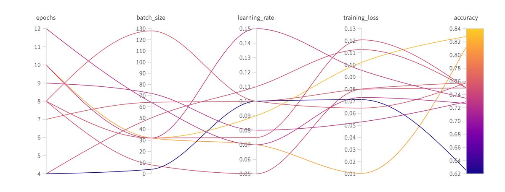

Research internship · 2023
Multimodal Emotion Recognition
A research internship at the University of Portsmouth, on models that infer emotional state from whichever signals are available.
- Role
- Research assistant intern
- Stack
- Python · PyTorch · Transformers · DeBERTa
- Scope
- Model fine-tuning, experiment tracking, a real-time transcription tool
- Status
- Completed in 2023 · published in 2025
Context
What I built
